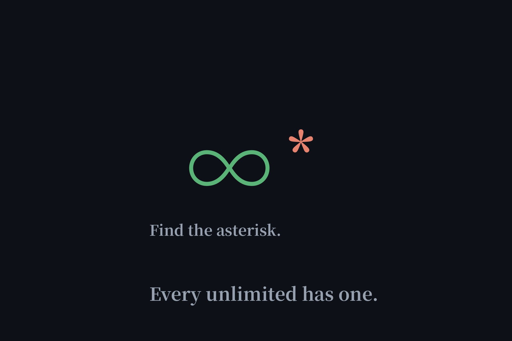

Free AI Agents With Unlimited Use: What's Actually Real (2026)
"Unlimited" is the loudest word in free-AI marketing, and Google's own related questions show people keep asking if it's real. We investigated the boldest claim — a 30,000-star GitHub project promising unlimited free Claude, GPT, and Gemini — and mapped every honest "unlimited" we could verify. Rule of thumb: every unlimited has an asterisk. The honest ones print it.

The boldest claim: 9Router
9Router is a legitimate, actively maintained open-source project (30k+ stars, MIT license, commits daily). Its trick is clever, not magical: it's a self-hosted gateway on your own machine that routes your requests through providers' official free tiers — Kiro via an AWS Builder ID, OpenCode's no-auth proxy, Vertex AI's trial credit — using your own OAuth tokens, with automatic fallback when one dries up. No shared keys, no piracy. But "unlimited FREE" is already dead by its own README's admission: Kiro's free tier dropped from unlimited to ~50 credits a month, and the iFlow, Qwen Code, and Gemini CLI free channels it once used are all shut down. Its "no signup needed" line is misleading too — several channels need AWS or Google Cloud accounts. And note the privacy wrinkle: Cursor's desktop app can't reach localhost, so the docs point Cursor users at 9Router's cloud endpoint — meaning your code passes through their servers in that setup. Verdict: a genuinely useful free-tier aggregator, not unlimited, with terms-of-service gray zones around multi-account rotation.
The honest unlimiteds
| What's unlimited | Tool | The asterisk (printed honestly) |
|---|---|---|
| Autocomplete + chat | Codeium | Agent work capped at 25 credits/month |
| Image generation | Raphael AI | Images only, no chat agent |
| Everything | Local models (Ollama) | Limited by your own GPU |
Codeium: unlimited, with the cap in the open
Codeium gives you unlimited autocomplete and chat — genuinely unlimited — but agent work is capped at 25 credits a month, and they say so upfront. This is what honest "unlimited" looks like: the unlimited part is real, the boundary is labeled, and you can plan around it. Compare that with vendors who bury the cap in paragraph 14 of the terms.
Raphael: unlimited images, verified
We verified Raphael AI in our ranked test: unlimited free image generation, no account, and it held up. The asterisk is scope, not a hidden cap — it's images, not a coding agent. Narrow unlimiteds like this are the most trustworthy kind, because there's less to hide behind.
The only true unlimited: your own hardware
Run a model locally via Ollama and usage is unlimited in the only sense that matters — nobody can throttle, expire, or reprice it. The cap is your GPU and your electricity bill. We mapped this route in our no-API-key test. Everything cloud-based that claims "unlimited premium models" is either loss-leading (temporary), scoping the word (Codeium-style), or already dead (9Router's retired channels).
How to read any "unlimited" claim in 30 seconds
Ask three questions: unlimited what, exactly? (which feature), until when? (promo, trial, or permanent), and whose money pays for it? (ads, your data, VC subsidy, or your hardware). If a vendor can't answer all three on one page, the asterisk is doing the heavy lifting. For the full map of what "free" can mean, see our completely-free guide.
FAQ
Is there a free AI coding agent that is unlimited?
No fully unlimited one exists. The closest honest answers: Codeium offers unlimited autocomplete and chat (agent work capped at 25 credits/month), Raphael offers unlimited image generation, and local models via Ollama are unlimited except by your own hardware.
Is 9Router really unlimited and free?
No. 9Router is a legitimate open-source gateway that routes your requests through providers' official free tiers, but its own README admits the "unlimited" era ended — Kiro's free tier dropped to ~50 credits/month, and several free channels are dead. It's a clever aggregator, not unlimited.
Is there a free AI with unlimited use?
Truly unlimited free AI exists in only two forms: local models on your own hardware (unlimited except by your GPU), and narrowly-scoped freebies like unlimited image generation (Raphael) or unlimited autocomplete (Codeium). Anything claiming unlimited premium models has an asterisk — find it before you rely on it.
Which AI agent is totally free?
See our complete map of what "free" means — no-signup agents like Duck.ai, no-key local setups, honest free tiers, and expiring trials.